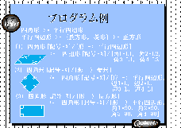

<html>
<head>
<title> Slide No.6 </title>
</head>

<frameset rows="430,130">

<noframes>
<body>
<a href="GIF/slide6.GIF"></a>

<a href="AU/voice6.au">
	</a>[507K]<p>
<!--		-->
これが、今説明した例題を <b> Quixote </b> で記述した
プログラムです。
最初の１行は <br>
<a href=""> 「平行四辺形は四角形である。」 </a>
を示し、次の行が、<br>
<a href=""> 「長方形と菱形は、平行四辺形であり、
	      正方形は、長方形と菱形である。」 </a> <br>
ことを示しています。<p>

次に、(1) のルールが、
<a href=""> 「向かい合う角の大きさが等しいものが平行四辺形」 </a>
を <br> 表しています。
皆さんは、「向かい合う辺が平行なもの」の方が平行四辺形の定義としては
馴染みがあると思いますが、ここではそれと同じ意味で、計量的な
「向かい合う角の大きさが等しいもの」を記述しました。<br>

更に、(2) のルールが
<a href=""> 「平行四辺形のうち、隣合う辺が等しいと菱形」 </a>
を <br> 表し、(3) のルールが
<a href=""> 「平行四辺形のうち、９０度の角を持つと長方形」 </a>
を <br> 表します。<p>

この記述が詳しく分かるように、先ほど挙げた
<b> Quixote </b> の具体的特徴をこれから一つずつ見ていきましょう。
<p>
<!--		-->

<hr>
<a href="slide7.html" target="_top">次の OHP へ</a>
<br><br>
<a href="slide5.html" target="_top">前の OHP へ</a>
<br><br>
<a href="HomePage.html" target="_top">OHP の一覧へ</a>
</body>
</noframes>

<frame src="onlyslide6.html">
<frame src="buttonexpla6.html">

</frameset>

</html>
